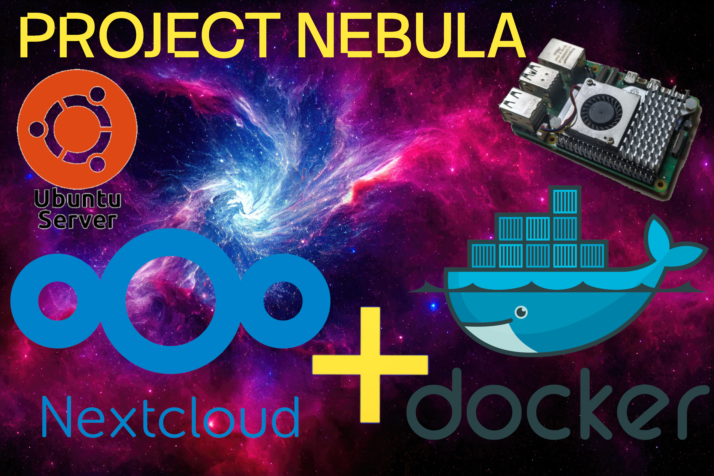

NEXTCLOUD

In this tutorial, you'll learn how to install Nextcloud All-in-One using a Docker Compose file configured to store its data inside a dedicated Btrfs subvolume located on a separate partition of the same device. If you haven't completed the setup of those subvolumes yet, make sure to watch the previous tutorial—linked in the sidebar of this website.
Mandatory
To install Nextcloud on your server, you must meet the following requirements. You'll be prompted to use a domain name. If you don't have one, you can easily create it using DuckDNS ↗. Make sure you know your public IP address — simply search "What's my IP" on Google to find it. Next, create a valid subdomain to use for your Nextcloud instance.
You also need access to your router to forward port 80 and 443 to your server.
You should verify that the ports were successfully opened. To do this, create a temporary testing server listening on port 443. Open the terminal and run the following command. The server will automatically stop once you end the command with Ctrl+c:
Open the following website and check port 443. It should automatically detect your public IP address, set the test to port 443, and verify whether the port is open.
can you see meNow, go to your terminal, stop the previous command by pressing Ctrl+C, and run it again using port 80. Then, verify this port on the same website as before.
If port 80 appears closed, first verify your router's configuration. If everything is set up correctly and the port is indeed open, your Internet Service Provider (ISP) is likely blocking it. In this situation, HTTP requests won't even reach your router, so continue following this tutorial.
If you can verify that both ports are opened, there's no need to configure your own SSL certificates. In that case, you can skip that step (SSL SETUP) and remove the two corresponding lines from the compose.yaml file, in the step (Compose) — these lines will be explained when you reach that part of the instructions.
Set up the Nextcloud project directory
Create and prepare the directory where your Nextcloud project will live. This folder will store your Docker Compose file and any configuration related to your Nextcloud AIO deployment. Make sure the directory is located inside the dedicated subvolume you created earlier, so that your data and configuration persist independently from your operating system.
Create the directory for your Nextcloud configuration, then set the appropriate ownership and permissions.
SSL Setup
Proceed with the following steps only if your ISP is blocking Port 80 traffic.
Create a directory to store the ssl certificate
Install acme
Register your email, you will not be promted to return any code from your email, it is just a local account in your server.
Save your ACCOUNT_THUMBPRINT as you might need this credential in the future:
Generate your SSL certificates
It will create a subdirectory such as /mnt/subvolumes/conf-files/Nextcloud-AIO/acme/YOUR-DOMAIN-NAME.duckdns.org_ecc/, where the certificates will be stored. A cron job will be set up to automatically renew these certificates. Each certificate is valid for 90 days, and renewal is scheduled to occur when the certificate has 30 days or less remaining before expiration. You need to edit this cron job to point to the directory where the certificates were created and add a command to restart the Nextcloud Apache container after renewal. This cron job runs daily at 18:35. Additionally, another cron job will be added using the @reboot option to ensure that, if the server is off at 18:35, the renewal process will run automatically the next time the server starts.
Edit your crontab file; using nano as the editor is a good option.
Change the owner and permissions:
Compose file
Now you need to download the official Nextcloud Docker Compose file applied to this tutorial. You can do this by running the following commands:
In this file, four lines have been modified. The first two replace the SSL configuration volume files that your Nextcloud instance will use. Since you may want to redeploy this container in the future, these changes ensure that Nextcloud will continue to use your own SSL certificates even after the containers are restarted.
If your ISP is not blocking ports 80 or 443 and both are correctly opened and accessible from the internet, then delete these lines, as you do not need to create your own SSL certificates and will use the ones provided by Nextcloud.
The third modified line is AIO_DISABLE_BACKUP_SECTION: true. This disables Nextcloud's built-in backup section, which is unnecessary in this setup because all backups will be managed separately using the Borg backup solution. By doing this, you avoid redundant or conflicting backup processes within Nextcloud.
The last modified line is NEXTCLOUD_DATADIR: /mnt/subvolumes/nextcloud. This ensures that your photos and videos are securely stored in the @nextcloud subvolume. By doing so, if you ever need to revert to a previous configuration, your important files will remain safe and will not be lost.
Be aware that if you named your volumes differently, you should adjust the paths accordingly. Also, using the data subdirectory inside @nextcloud is highly recommended by the Nextcloud developers.
Deployment
Now it's time to deploy the container by running the following command:
In case you need to perform a fresh deployment, you should delete and clean the Docker containers as well as the remaining Docker volumes. Follow these steps:
Configuration
Let's configure the Nextcloud instance, open your browser and type in your sever's ip followed by the port 8080
You might see the following message: "Your connection is not private. Attackers might be trying to steal your information from 192.168.0.210 (for example, passwords, messages, or credit cards). Learn more about this warning." If this appears, simply open the Advanced options and select "Proceed to 192.168.0.210 (unsafe)".
In this interface, you will be given a passphrase that you will need in the next step. Make sure to save it into a text file and then use it to log in.
You will be prompted to enter the subdomain you created with DuckDNS.
Configure your Nextcloud instance with your preferred apps and your location. I personally do not need to install the Talk, Whiteboard and Imaginary apps.
After you have successfully set up your apps, it's time to "Download and start containers". This might take a couple of minutes.
When all your container are running successfully you will be given a password for your admin user, copy it and log in.
Apart from all your custom configurations, you should:
- Administration Settings -> Personal -> Security -> Change your password and enable TOTP
- Apps -> Disabled Apps -> Externarl storage support (Enable)
- Administration Settings -> Administration ->External storage -> set a directory name and location as: /mnt/subvolumes/nextcloud
- (If you want, set optional extra configurations before this.) Accounts -> Create your users and groups.
This is essentially the basic initial configuration. You can now skim through the additional settings to see if they meet your needs; otherwise, skip ahead to the Backup section.
Optional Extra Configurations
Nextcloud generates a large number of preview files by default, which can cause unnecessary wear on the storage device over time, especially on SSDs or limited-write media. These preview thumbnails are created for photos, videos, documents, and other file types so that the web interface and various apps can display quick visual summaries. However, if you do not rely on these previews—or if performance and storage longevity are more important to you—you can disable this behavior entirely, preventing any application from producing these auxiliary files. By removing or adjusting this configuration, Nextcloud will stop generating what are essentially redundant or “junk” preview files, thereby reducing disk usage, minimizing write operations, and keeping your storage system healthier and more efficient in the long run.
Stop all the container from the YOUR-SERVER-IP:8080
Edit the following directory:
Here there are some configs you should edit:
You can delete the previews of the files that are already in your instance:
Create an empty skeleton for new users without any default photo or document:
Copy Files
When you want to copy your files to your Nextcloud instance, you have two options. The first option is to use the nextcloud web interface. While this method is simple, it depends entirely on your internet speed, which limits the data transfer rate.
The more efficient method is to transfer your data directly on the server into the @nextcloud subvolume. However, for this apporach you must stop the containers first, to avoid any conflicts during the process. Additionally, you need to set the correct file ownership and permissions once the transfer is complete. You can do this by running a single command at the end of a successful data transfer.
After copying the data from the server to /mnt/subvolumes/nextcloud, make sure to set the correct permissions:
Renew Your Public Ip
Your DuckDNS domain must always point to your current public IP address. Since some ISPs change this public IP periodically, it's very important to update it on your domain every time it changes so that it always resolves correctly. To achieve this, you will use a script that sends your current IP address to DuckDNS. A cron job will run this script every 5 minutes and will generate a log file in case any error occurs during the process.
Create a directory in the @conf-files subvolume, and inside this one create the script:
Change its permission and create a cronjob:
Backup
We will be utilizing Nextcloud's internal backup system to safeguard our configuration settings, ensuring that the core elements of the platform, such as user accounts, passwords, and installed apps, are regularly backed up and protected. However, it's important to note that the actual data storage is located on a local external storage system. This storage, being outside the scope of the Nextcloud backup, won't be included in the automatic backup process. The reason behind this is to maintain the flexibility of managing the data independently from the platform's internal backup system. By separating the data storage, we can ensure that the backups focus on the configuration and user-related information, while the external storage can be handled with a customized backup solution, tailored to the specific needs of the data. This approach allows for greater control over both the system's settings and the data it houses, providing a more efficient and customizable backup strategy.
Go to YOUR-SERVER-IP:8080 and createa backup, save your backup encrypted password
The backup directory is:
Now your nextcloud configuration is backed up properly.